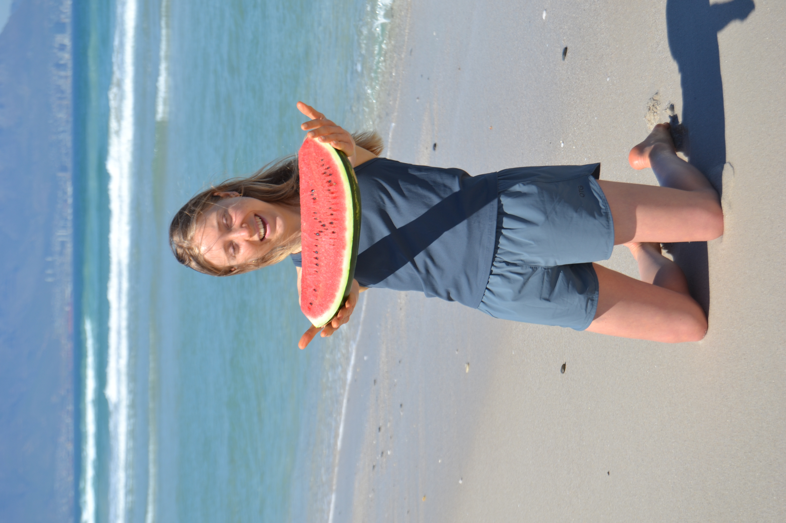
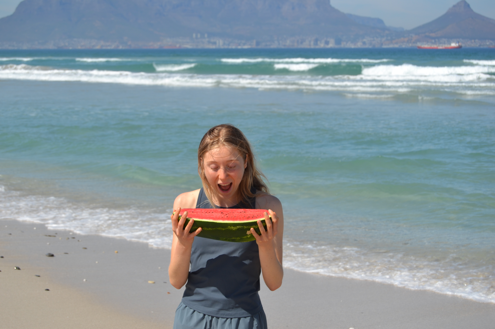
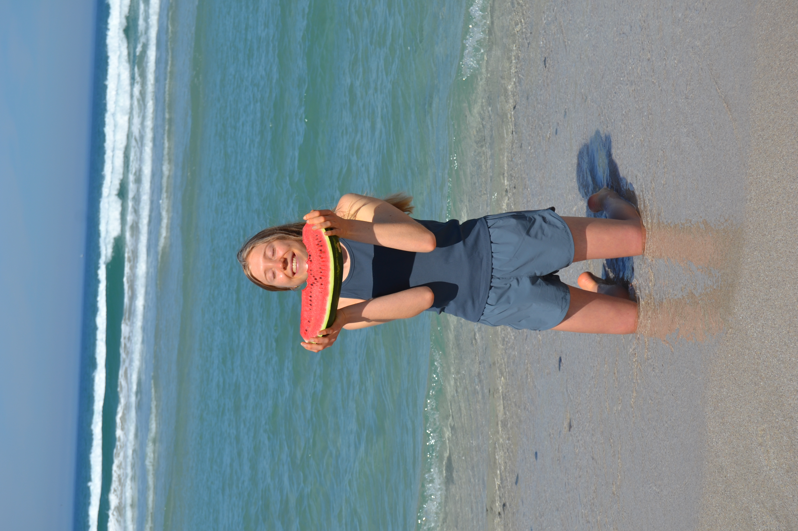
I grew up loving food, eating anything and everything and my health concerns were not more than the concerns of most other people around me. That started to change when I was in my early teens and began struggling with hormonal acne which not only had its physical strains but mental and emotional too. It soon became so severe that I was willing to do whatever it would take to make it go away.
After resorting to medication and trying everything that I could try in my own strength without success, I cried out do God and he put my wellness coach - Michelle Pearson - on my path who helped me wean off the medication and just by changing my diet and lifestyle, my skin healed and problems I didn't even know were not normal came right too!
I have learned even more along the way and God has met me again and again, putting people and opportunities and challenges on my path that have allowed me to experience his unconditional love and his faithfulness to me and those around me - his children. My prayer is that we will grow in wisdom and knowledge and love so we can live our best lives all round and bring Him glory. Amen!
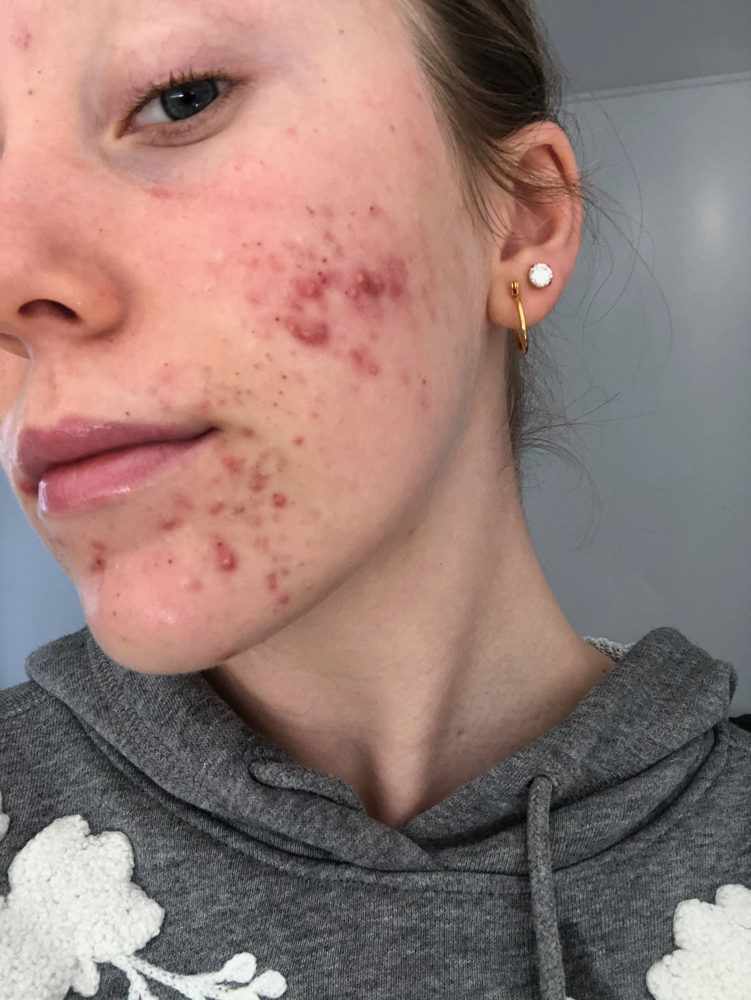
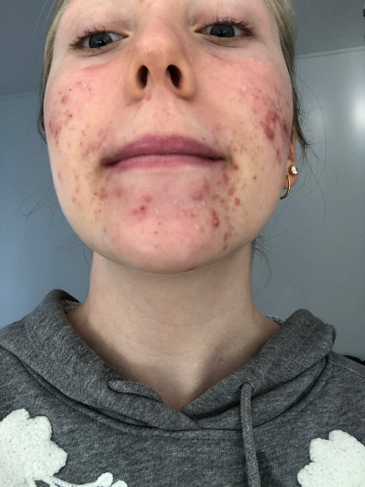
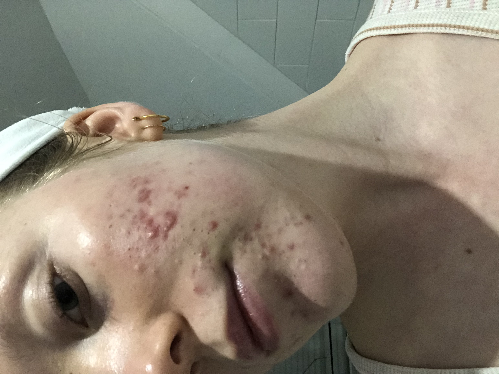
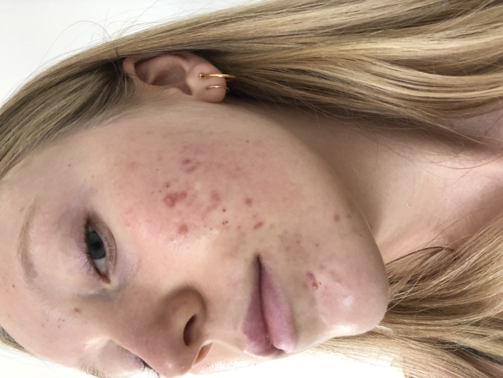
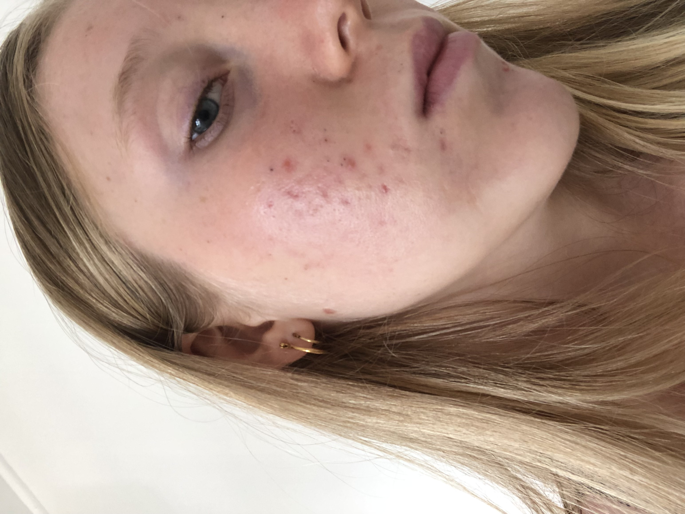
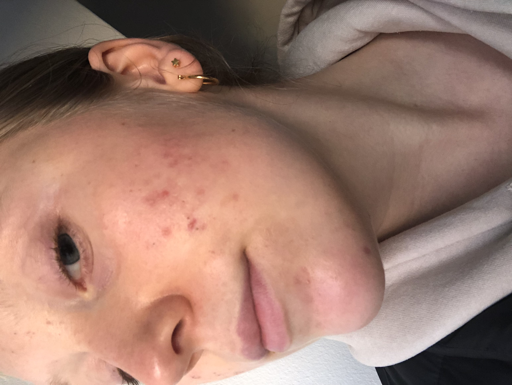
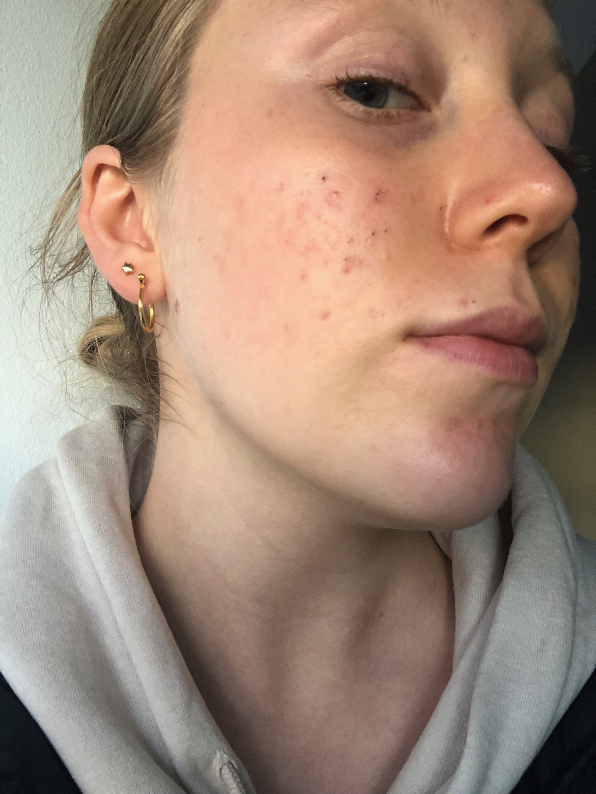
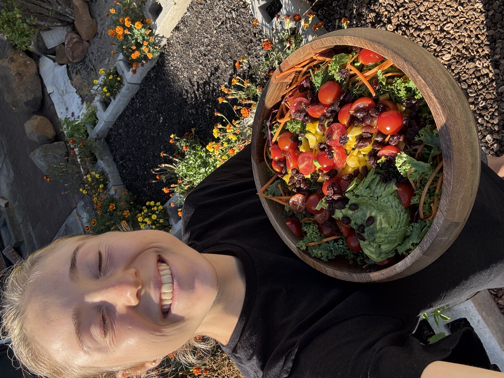
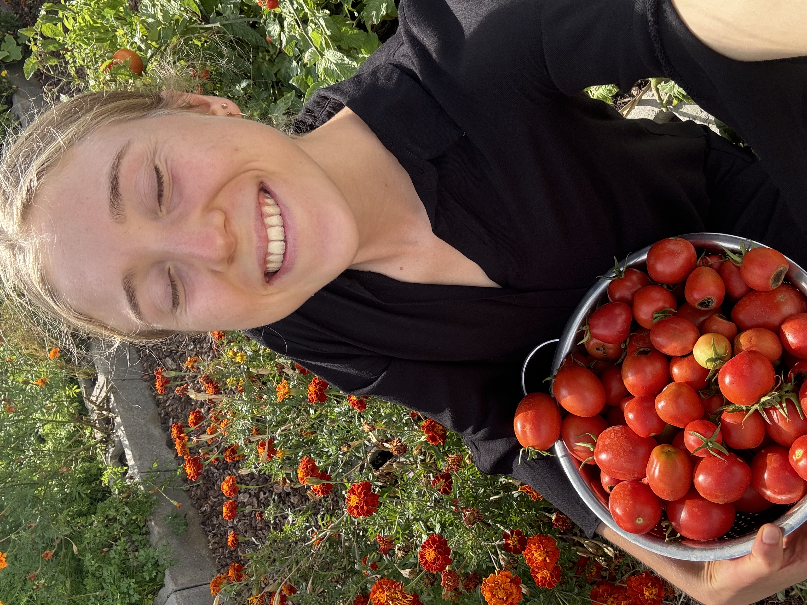